Governing the system behind the system
How I reframed a usability request as a governance problem, and designed the infrastructure that lets the people closest to operations change the system safely, without going through engineering.

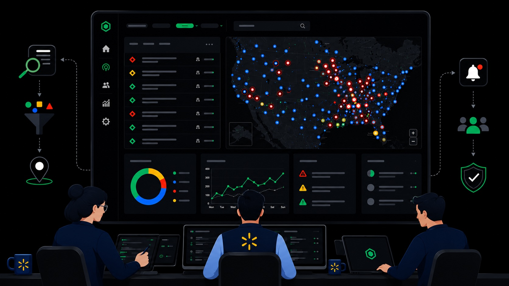
Security operations at global scale
Warden is Walmart's global security operations ecosystem, built across two surfaces: the Emergency App, a mobile tool for store-level staff to report incidents; and the Warden platform, a desktop system used by the Global Security Operations Center to monitor and coordinate response.
It follows a four-stage lifecycle: Facility (routine monitoring) → Watch Item (suspicious activity) → Incident (emergency response) → Event (multi-location coordination). What operators are asked, what's required, and what triggers a notification all change by stage.
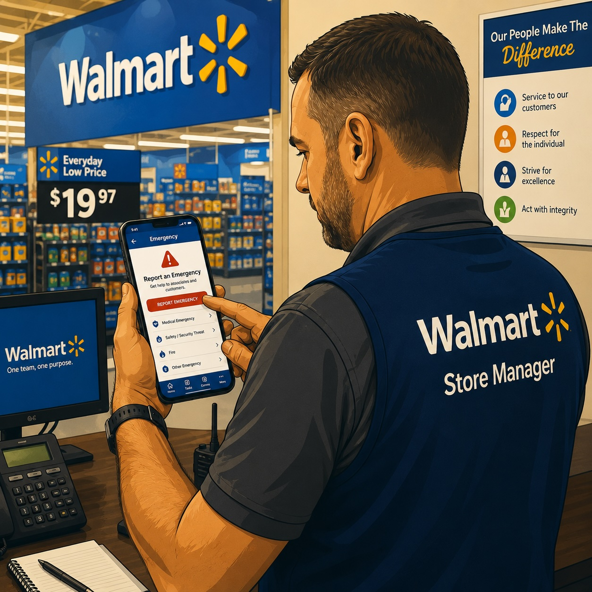
Store Managers · Emergency App
- Report suspicious activity in real time
- Request emergency assistance
- Submit incident details from the field
- No access to Warden platform content
Security Operators · Warden
- Monitor cameras and incoming reports
- Investigate and escalate incidents
- Create Watch Items, Incidents, and Events
- Coordinate emergency response
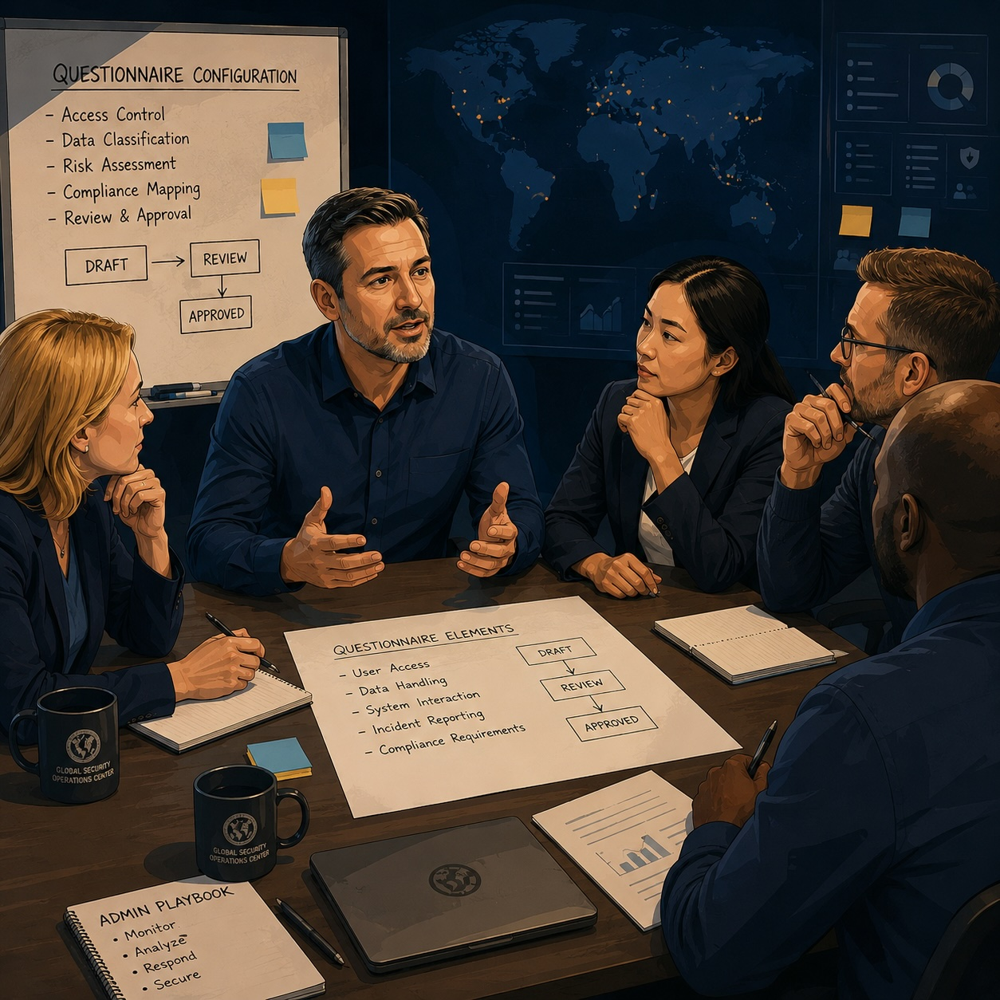
Super Admins · Manual Process
- Own questionnaire content and compliance rules
- Coordinate changes across multiple approval layers
- Rely on spreadsheets and meetings to track every update
- No direct path to change the system they're accountable for
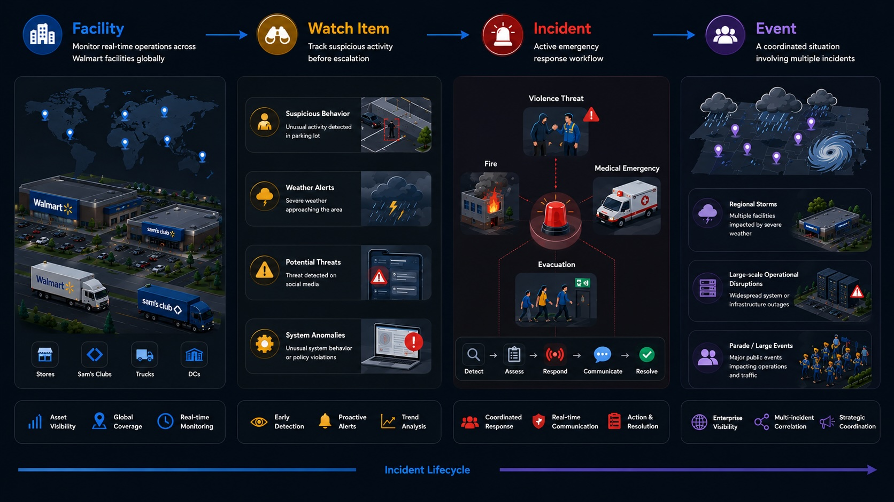
A platform that had outgrown its foundations
Warden was built fast. Growth from a handful of incident types to 72+ across 11 categories (more regions, more compliance requirements, and a designer transition along the way) left a system that had never been designed to be maintained at this scale. I joined in February 2026 as the sole designer on a ~40-person team, inheriting three surfaces and an open set of problems.
72+ incident types, 11+ categories, 80+ question categories, and a taxonomy still actively evolving. Regional requirements and compliance rules varied across the system with no unified logic.
The codebase mixed Material UI, Ant Design, and custom styling. Patterns were inconsistent across surfaces. A previous designer had built a Warden sub-system that improved usability, but adoption was partial and it had never been reconciled with Walmart's enterprise design standard.
Every questionnaire change (even minor ones) required a spreadsheet, multiple approval meetings, an engineering ticket, and a release cycle. Operational needs moved faster than the system could adapt.
As the only designer, I was simultaneously responsible for new feature design, design system alignment across three layers, and AI feature evaluation, with no design coverage handover from the previous designer.
Three different problems. One root cause.
I interviewed three stakeholders with different vantage points: the Director of Operations, the Director of Security Operations who owned questionnaire content, and the Product Manager who bore the cost of every change request.
Workflow ownership was trapped in spreadsheets, approvals, and release cycles. The people who understood what needed to change had no direct path to change it.
The real problem was workflow governance, not the workflow itself
What looked like a UX problem was structural. A single questionnaire change followed this path: spreadsheet → approval meetings → engineering ticket → release cycle. Weeks, for what was essentially a content edit. Worse, a simple change had downstream effects on compliance reporting, dashboards, and notification subscriptions, none of which were visible to the person requesting it. That invisibility was the real problem.
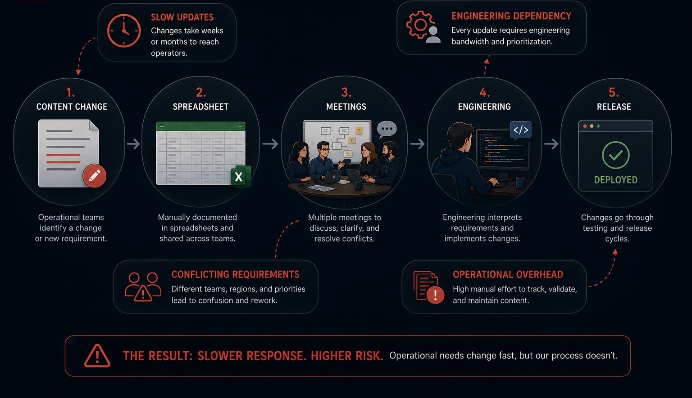
Moving workflow ownership closer to operations
The core opportunity: move the ability to change the questionnaire out of engineering and into operations, without compromising compliance or content integrity. Meaningful flexibility within real constraints: approvals still required, taxonomy still consolidating, compliance non-negotiable. The design challenge was finding that boundary.
Designing the boundary between flexibility and governance
The central design question: what to allow, not just what to show. Phase 1 gave Super Admins four configurable dimensions: visibility (show/hide per question within an incident type), ordering (drag-to-reorder), requiredness (required vs. optional), and country rules (region-based question logic). Super Admins can also lock individual questions based on compliance or policy requirements, preventing users with lower access from making changes to those questions.
Every change is logged in a persistent audit trail: who changed what, when, and on which incident type. Auditability was a first-class requirement, surfaced at the bottom of the configuration view rather than buried in settings.
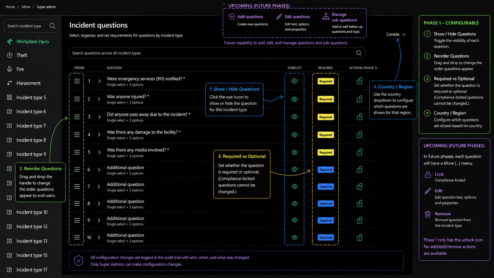
Conditional logic and the sub-question system
Beyond Phase 1, I prototyped a conditional logic model for future question authoring, where answering a question can trigger a relevant follow-up, constrained enough to keep unreviewed content out of compliance-sensitive workflows.
Earning trust before expanding capability
The most important decision was what not to build yet. Question creation, editing, and removal were excluded from Phase 1, not for technical reasons, but because the taxonomy was mid-consolidation, approval workflows weren't formalized, and premature authoring access would have created real compliance exposure. Phase 1 was designed to earn trust before expanding capability, with the roadmap communicated openly through the deferred-capabilities sidebar.
- Show / hide questions per incident type
- Drag-to-reorder question sequence
- Toggle required vs. optional
- Country and region rules
- Compliance locks to restrict changes by lower-access users
- Full audit trail with user, timestamp, and change record
- Create and edit questions
- Remove questions from incident types
- Sub-question and conditional logic authoring
- Incident type and category management
- Historical versioning and change rollback
- AI-assisted configuration
Allow Super Admins to create, edit, and remove questions immediately. Maximum flexibility, but the taxonomy was mid-consolidation, approval processes weren't established, and question changes cascade into compliance reports, dashboards, and subscription logic.
Phase 1 introduces meaningful operational control (visibility, ordering, requiredness) while deferring authoring until governance structures mature. Builds trust and adoption before expanding capability. A question's content stays stable; only its behavior is configurable.
Aligning three sources of truth simultaneously
I inherited three overlapping design system layers: a live product built on mixed Material UI and Ant Design; a Warden UX sub-system built by the previous designer (dark-mode-optimized, partially adopted); and Walmart's LD 3.5, a new company-wide standard whose dark mode components were still in progress. I audited inconsistencies between the live product and the sub-system, aligned new work to LD 3.5 where possible, and documented Warden-specific patterns for formal LD 3.5 review, so they could enter the backlog rather than remain one-off implementations.
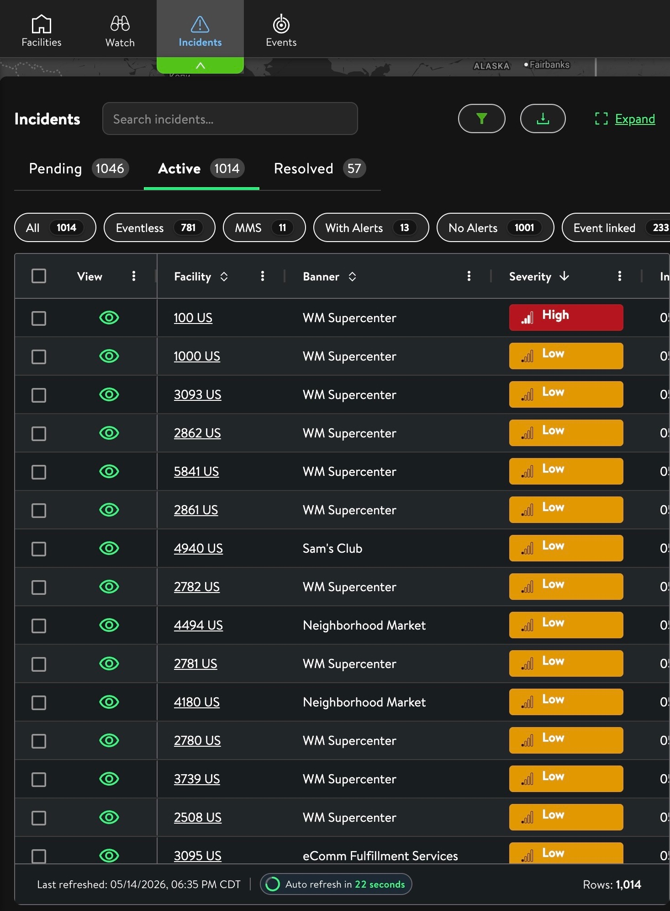
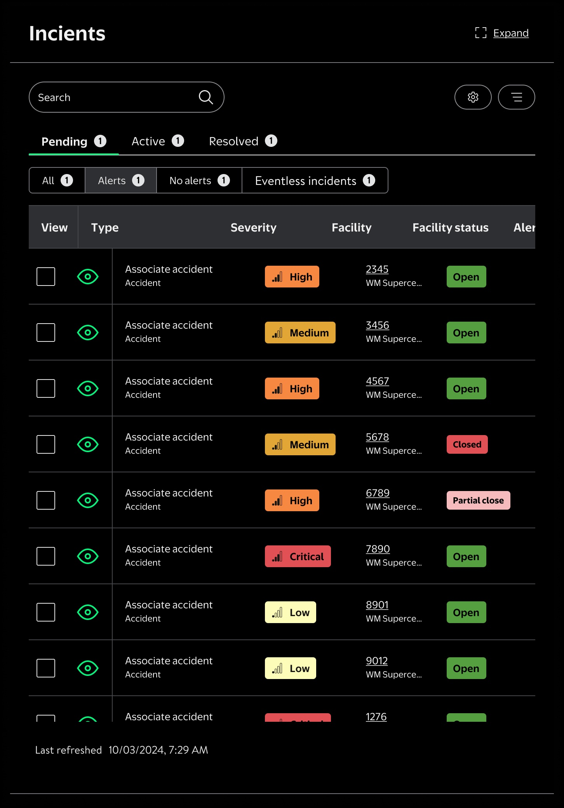
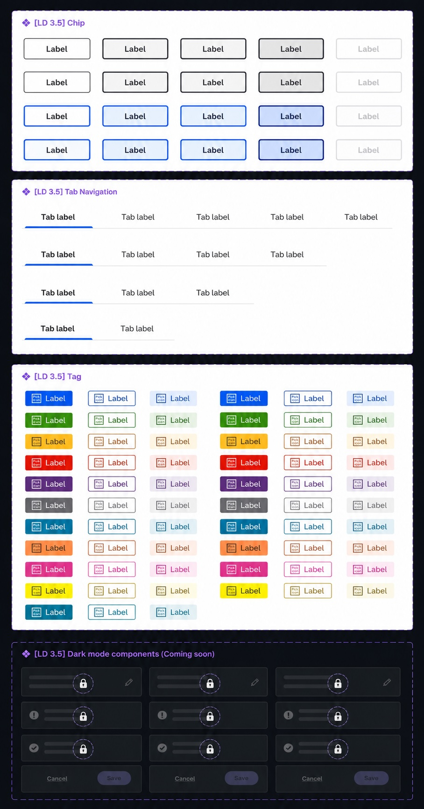
Three evolving systems, each at a different level of completeness and dark-mode readiness, all requiring alignment at the same time.
Evaluating AI in high-stakes workflows
As the sole designer, I was also responsible for evaluating two AI features that had already been built. The features existed, but the interaction model hadn't been validated for the accountability risks specific to a security operations context. My discovery work focused on understanding where the current flows created trust gaps, and defining the guardrails needed before operators could rely on AI output in time-sensitive situations.
AI-assisted incident reporting
Store managers in the field can't always stop to fill out a form. The AI reporting flow lets them describe the situation in plain language and pre-populates the incident form from that narrative. The AI presents its output as a draft (every field editable, ambiguities flagged for human confirmation, and a persistent note reminding operators to verify before submitting). The AI never submits on their behalf.
AI-assisted incident summary
Operators managing high volumes of concurrent incidents can tap to surface a one-paragraph AI summary of any open report, enough to assess severity and act, without reading through a full questionnaire response. Always on demand, never auto-shown.
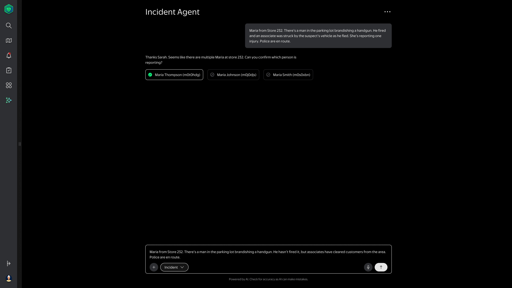
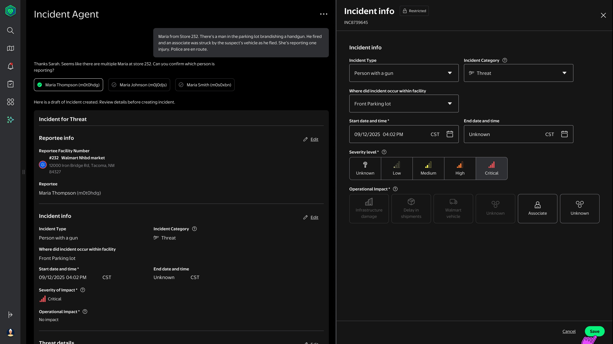
AI assists documentation. Humans remain accountable. Every interaction pattern in the AI features (disambiguation prompts, editable drafts, explicit accuracy reminders) was designed to support this principle. The risk in a high-stakes workflow is not AI failing to extract data correctly. It's an operator trusting AI output they didn't verify.
What was delivered, and what comes next
Phase 1 was handed off to engineering at launch-ready fidelity, with annotated specs and implementation support through the build. The governance framework and interaction model it established will carry forward into subsequent phases.
Intended success measures (directional, not baselined): reduced engineering dependency for workflow changes, faster questionnaire updates, and stronger governance visibility through the audit trail.
From designing screens to designing systems
The stated request was to improve usability. Research revealed that the inconsistencies, the slow workflows, the frustrated operators all traced back to a governance bottleneck that UI refinement couldn't fix. That reframe changed the scope, the stakeholders, and what "done" meant.
-
I'd push for instrumentation from day one. There was almost no baseline data: how long changes took, how often operators hit irrelevant questions. Measurement as a first-class requirement would have made Phase 1 success criteria far more concrete.
-
The design system work deserved earlier ownership alignment. The three-layer challenge (product → sub-system → LD 3.5) was complex, but some of that complexity was avoidable ambiguity about who owned each layer. Brokering that earlier would have reduced a lot of reactive navigation.
-
The most valuable outcome was the governance framework itself: a clear boundary between what's configurable and what requires engineering, an audit trail as an accountability mechanism, and a phased model that builds trust before expanding authority. That's the infrastructure that makes the platform improvable over time.